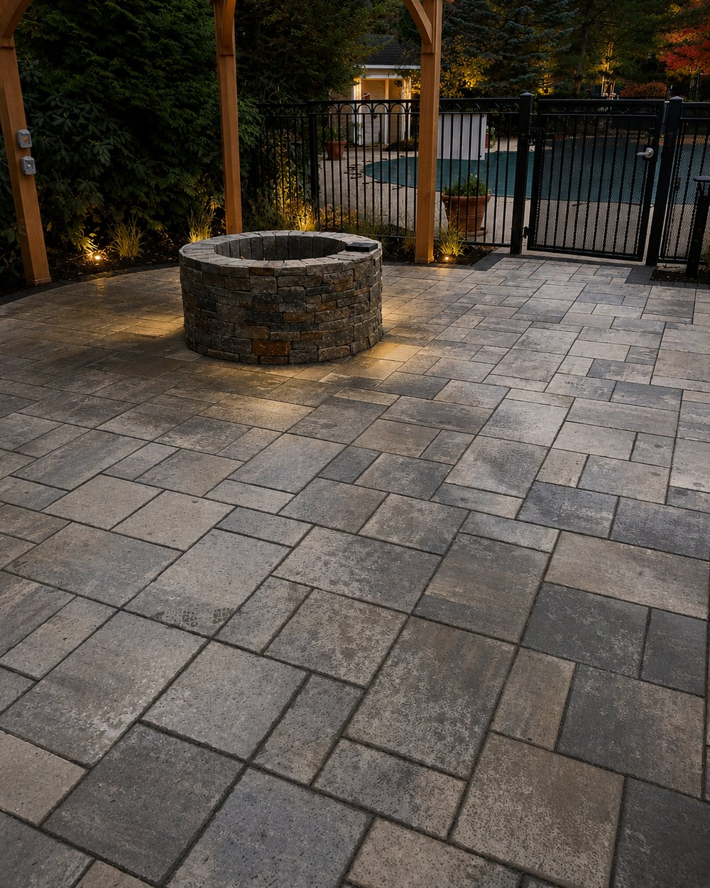

How it works
Drag a corner. It counts the feet.
An example, on a patio we built — drag any corner and watch the number move. You get the same four on a satellite view of your own property.
We pull your property up from above and put a shape on it. You drag it to fit — nothing is sent until you send it.
We read the grade and the drainage — the two things a satellite cannot show you — and give you the exact number. No obligation.
One-year workmanship warranty. If something we built moves, cracks or fails in the first year because of how it was built, we come back and fix it. No argument, no invoice.
Pace it, or use something you know — a door is about three feet.
Got it. Expect to hear back shortly.
Kitchens, roofing, siding and snow plowing are ours too — tell us what you need and you get an answer from the person who does the work.